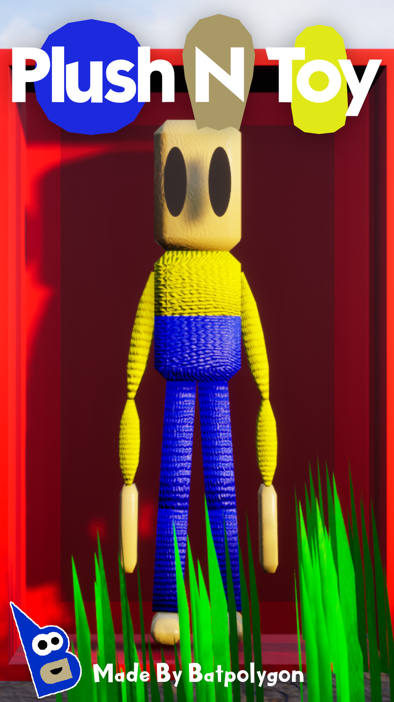

PlushNToy
*Si vous trouvez un ou plusieurs bugs, n'hésitez pas à me les faire remonter sur mon Discord.
Vidéos de la version :
Changelog :
Gameverse Update [Mise à jour majeure]
🌌 Génération de Monde Procédurale (Réf. No Man's Sky)
- Génération procédurale de mondes énigmes avec puzzles environnementaux.
- Répartition aléatoire des gisements et ressources d'Imagination.
- Faune et créatures générées avec attributs aléatoires.
- Missions de ravitaillement et de collecte attribuées par les PNJ explorateurs.
⛏️ Nouveaux Objets & Machines (Réf. Minecraft)
- Équipements cultes ajoutés : Épée en diamant, Pioche en diamant et Pomme en or.
- Machine Raffineur : Permet de combiner et transmuter différentes ressources pour créer des matériaux rares.
- Machine Infuseur : Système d'enchantement pour armes avec 4 runes :
- Sharpness : Augmente considérablement les dégâts infligés.
- Knockback : Repousse violemment les ennemis à l'impact.
- Flame : Enflamme les cibles touchées.
- Vampirism : Restaure +1 PV au joueur à chaque coup réussi.
🐉 Zone des Nuages, Haricot Magique & Montures (Réf. Dragon Ball)
- Nouveaux artefacts martiaux : Bracelet de combat, Bracelet magique, Bâton de combat et Haricot magique.
- Ascension Céleste : Pour atteindre la Zone des Nuages, vous devez planter le Haricot Magique dans la terre pour faire jaillir une liane colossale montant jusqu'à la stratosphère, puis la grimper !
- Nuages Magiques Chevauchables : Dans cette région aérienne, des nuages magiques vivants apparaissent comme de véritables créatures : vous pouvez les chevaucher et voler librement dans les airs !
- Nouveau marchand céleste exclusif au sommet des cieux.
- Quête légendaire des 7 Billes Mystiques : débloque la brique imaginaire Recherche Guidée agissant comme un radar directionnel d'objets.
🗺️ Confort & Qualité de Vie (QoL)
- Aimantation des ressources : Les jetons d'Imagination gravitent et volent automatiquement vers le joueur à proximité.
- Carte du monde : Ajout d'une carte interactive (Map) avec téléportation instantanée (Fast Travel) vers vos différentes bases.